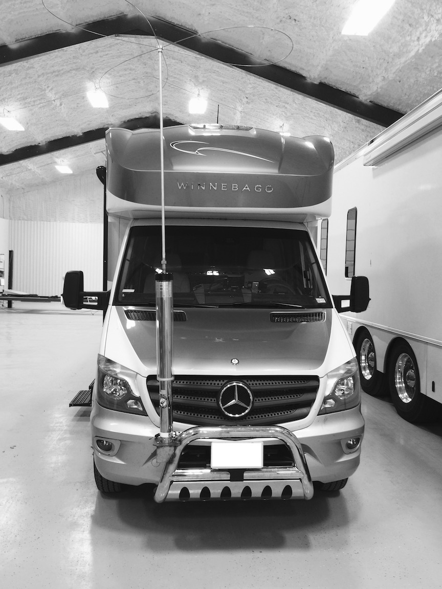

{kind=link}
 The left photo, and the lower right one, depict an installation on a Volve-based Renegade belonging to Peter Naumburg, K5HAB. While not an ideal location for an HF antenna, it is the only solution in this case.
The left photo, and the lower right one, depict an installation on a Volve-based Renegade belonging to Peter Naumburg, K5HAB. While not an ideal location for an HF antenna, it is the only solution in this case. RV Notes
Last Modified:
Mon, September 6, 2010
Contents: Basics; Construction; VHF Antenna Ideas; HF Antenna Ideas; Wiring Considerations; Power Inverters; Conclusion;
Recreational Vehicles owners face unique installation problems. These include long runs of primary and coax wiring, limited antenna mounting schemes, poor ground plane issues, and RFI suppression. Worse, the answers are not always simple, the solutions are usually more expensive than other mobile installations, and RV manufacturers are generally less cooperative than automobile manufacturers.
As daunting as the problems might seem to be, there are solutions. Most of what you read here is not first hand knowledge as I have never owned an RV. Rather it has been garnered from other amateurs who have found a solution. Some of these might not be applicable to your specific situation, although they might foster an idea to help you with your RV installation.
Incidentally, the term RV can also be applied to motor homes, travel trailers, or even large vans, as they all have similar installation issues.
If your RV is really a trailer pulled by a diesel pickup, you might want to read this article.
Depending on the make, model and year, RV bodies may be made of fiberglass, plastic resins, and/or aluminum. The roofs on some models are rubber based, and even when they're not, the metal is usually very thin. These facts may eliminate standard types of antenna mounting schemes, and present ground plane issues similar to those faced by OTR drivers. As I have stated many times within these pages, it is the metal mass under the antenna, not alongside, that counts. What's more, ground straps are not a substitute for a ground plane.
Adding insult, the lack of a full-metal body, and the requisite long factory wiring harnesses increases the likelihood of RFI ingress. This means that extra care must be used when routing wires, especially low current control wiring like that used for remotely tuned antennas. Shielding, bypassing, and the liberal use of split beads are a given.
Mounting a standard HF or VHF mobile antenna on an RV is wrought with problems. Aside from the ground plane issues, fiberglass bodies tend to stress fracture around mounting holes. Because of this, a proper backing plate should be used, and the holes drilled and bolted through rather than using self-tapping screws. Here's an example.
Radiall-Larsen makes both VHF and UHF antennas (OM150CK for example) designed for mounting on fiberglass. They are a loaded half wave and don't require a ground plane, but they work much better if there is one. Even a small 18 inch square aluminum plate will suffice (this "trick" also works for most dual band antennas). The plate will also minimize any stress cracking.
There is one type of antenna that should be outlawed, and that is the glass mount. Because of the lack of a ground plane, the coax acts like the missing half of the antenna. The resulting RFI issues are bad enough with a metal bodied vehicle, but can be insurmountable on a fiberglass bodies one. Caveat Emptor! This includes mag mounted antennas even if you have a metal surface to mount one on.
The biggest issue with an HF antenna on an RV is the lack of a decent mounting location. This fact exacerbates both ground plane and shunt (capacitance) losses. Add in the higher ground clearance, the lack of a metal body, and an RV cab be less of a ground plane platform than your average sedan.

The left photo, and the lower right one, depict an installation on a Volve-based Renegade belonging to Peter Naumburg, K5HAB. While not an ideal location for an HF antenna, it is the only solution in this case.
Some RV owners install their HF antennas on the rear ladder; a less than desirable location for several reasons. However, the ladder itself does offer an alternative if it isn't grounded to the chassis. An auto coupler mounted near the base, and well grounded to the frame, will allow at least 40 through 10 meters in most cases. There are a few caveats to think about. The RF output voltage from an auto coupler can be very high (>10 kv) even at low power levels. Obviously, the ladder must be well insulated, and the attaching bolts have to be well isolated. Further, the ground side lead of the coupler must be kept short! Inches, not feet!
Auto couplers can be used to feed loops mounting on the top of an RV. Spacing isn't critical, but proper insulating is. You can also feed a long wire. One such installation I've seen had an AH-4 mounted behind the front bumper. The long wire ran up the front and over the top, with an over all length of about 35 feet. While using an auto coupler isn't the most efficient, it sure beats no antenna at all!
 One thing you don't want to do is mount the base of a screwdriver antenna inside the RV, and extend just the whip outside. I can't think of a lossier way to install an antenna, nor one with more RFI potential.
One thing you don't want to do is mount the base of a screwdriver antenna inside the RV, and extend just the whip outside. I can't think of a lossier way to install an antenna, nor one with more RFI potential.
For a few RV owners, stationary operation is all they attempt to do, which is fine. If this is your mode of operation, keep a few facts in mind. A mobile antenna stuck atop a tripod mount, with or without radials isn't a very efficient antenna. You're much better off with a dipole, and no I'm not talking about a couple of hamsticks. There are a number of on-line articles describing temporary dipole construction. A simple Google search will turn up enough to keep you busy reading for a few days, so I won't duplicate the effort here.
If you do go the auto coupler route, stationary operation means you can extend a long wire as far as you have room for. A 100 foot one works rather well. Again, remember the far end will have very high RF voltages, so the end insulator has to be robust.
RVs are typically longer than passenger vehicles, and usually have both DC and AC wiring. As a result, RFI ingress can be a bugbear. Following the recommendations in my Wiring and Bead articles are a good starting point. Pay particular attention to voltage drop calculations.
Most RVs utilize voltage inverters and/or generators. When in use, these devices generate a lot of RFI egress, especially the former. Shielding and bypassing the leads just doesn't seem to make much difference, due in part to their digital circuitry. Generator ignition systems aren't any different than vehicle ignition systems, so the same RFI suppression techniques can be used.
One good aspect is, RVs use BIG battery systems, with separate batteries for both SLI and accessory use. The only drawback to using the accessory batteries is the need to keep an eye on their voltage level. This is especially important if you use a battery booster. Remember, 10.5 volts is about the low as you can take a battery without permanent damage.
Most RVs equipped with multiple batteries also use some sort of isolation circuitry which protects the SLI battery from discharge, while the house batteries are being depleted. There are several ways to accomplish isolation, and I've covered most of the details here.
If you're adding a house battery, and plan on using an inexpensive diode isolator, check first to make sure the alternator has an adjustable voltage output (most do not). If it doesn't, look into the Hellroaring covered in the aforementioned article.
Probably the most bothersome of RFI issues, are those caused by solid state, DC to AC power inverters. There are two major types; Modified sine wave (MSW), and pure sine wave (PSW). There is an excellent review article in the April 2009 issue of QST, which describes how they work. As noted in the article, MSW inverters are prone to generating RFI. While less expensive than PSW units, their extra cost is easy to justify when weighed against the cost of filtering out the RFI; a nearly impossible task!
There is another potential problem exacerbated by power inverters, and that is a Ground Loop. With one exception, recreational vehicle manufacturers don't make the chassis of their coaches; bus, truck, and van manufacturers do that for them. Little, if any, thought goes into how things are grounded throughout most coaches. If you're not into amateur radio, you'd probably never notice, but you are, and you do! Correcting ground loop problems can be a very exasperating undertaking, especially when the coach manufacturer won't cooperate.
If you have problems, and can't get help from the manufacturer, then I suggest you contact these organizations; FMCA, RV America, RV Web.
As I stated previously, I have never owned an RV. That said, I don't think the mobile operating problems associated with them are any different than a standard sedan or pickup truck, albeit a little more severe due to the lack of a steel body. The key words are ingenuity, forethought, and above all patients; the same ones the rest of us should follow.